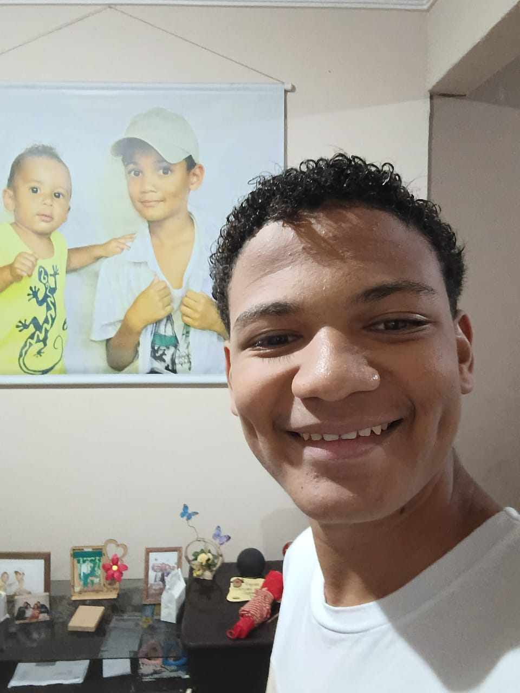

Sou estudante do cotemig e desenvolvedor em formação. Tenho interesse especial por desenvolvimento
de
sistemas, inteligência artificial, programação e criação de projetos que unam tecnologia e
criatividade.
Gosto de aprender colocando a mão na massa, explorando novas ferramentas e entendendo como as coisas
funcionam por trás delas. Meus projetos pessoais são parte importante da minha formação, pois me
permitem experimentar, resolver problemas e transformar conceitos em aplicações concretas.
Busco constantemente evoluir tanto tecnicamente quanto profissionalmente, encarando cada projeto
como uma oportunidade de aprender algo novo.